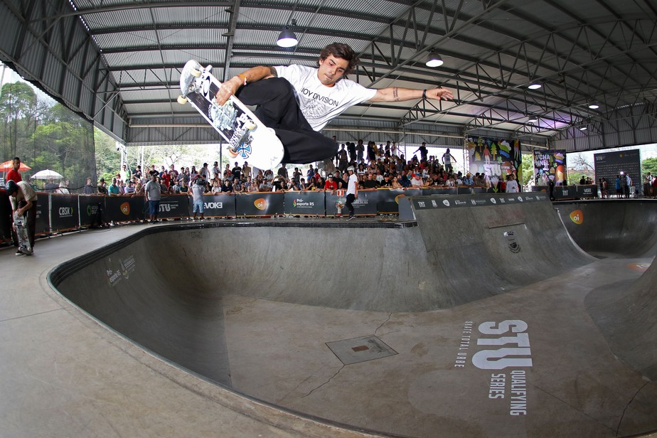

Olimpíadas
As Olimpíadas foram adiadas para 2021, porém nossos atletas estão aproveitando para treinar e se qualificar cada vez mais. Seguimos acompanhado eles nas redes sociais e mandando uma força, nesse tempo de pandemia.
Foi aprovada a mudança no calendário das competições esportivas pelo Conselho Executivo do COI o Comitê Olímpico Internacional, devido o adiamento das Olimpídas de Tóquio para 2021.
O novo cronograma definiu que os eventos classificatórios serão encerrados até 29 de junho de 2021, prorrogando em mais de 1 ano os eventos classificatórios devido a pandemia do Corona Virus.
Ao todo serão 40 Skatista Brasileiros classificados para os jogos sendo 20 homens e 20 mulheres divididos nas modalidades PARK e STRET.